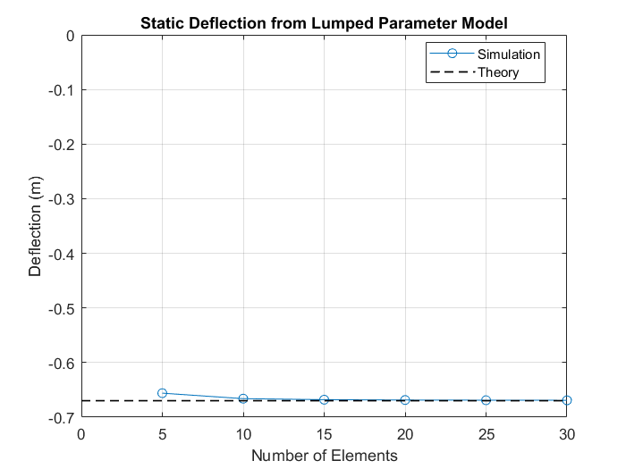

Lumped Parameter Beam for State-Space Calculation
This example shows a cantilever beam modeled using the lumped parameter method. In a simple test, transient simulation can be used to determine the static deflection of the beam.
The model is configured so that linearization techniques can be used to identify the natural frequencies of the beams at various modes.
The model is configured so that linearization techniques can be used to extract a state space representation that estimates the deflection of the beam based on the force applied to the end.
Contents
Model
Flex_Body Subsystem (Lumped Parameter Method)
The chain of flexible elements is automatically constructed using MATLAB commands. The subsystem mask permits the user to specify the number of elements, material properties, and beam cross section. The degrees of freedom for the flexible body can also be selected in the mask. The body "Flex Joint" within the element can be replaced by another Simscape Multibody block that has the desired degrees of freedom.
Static Deflection
In this model, the default values are for a 30m long hollow square beam constructed of steel (modulus of elasticity = 200 GPa, density = 7850 kg/m^3). The sides of the beam are 0.6096m long, and the wall thickness is 0.019m.
Euler-Bernoulli beam theory predicts the static deflection for a cantilever beam with one fixed end and one free end with equation (1)
Where
= Uniform load on the beam (force/unit length)
= 7850*(0.6096^2-(0.6096-2*0.019)^2)*9.8/30 = 3.4530e+03 N/m
= Length of the beam
= Modulus of elasticity
= Area moment of inertia of cross section
The area moment of inertia for a hollow square cross section is:
(0.6096^4-(0.6096-2*0.019)^4)/12 = 0.002612 m^4
Plugging these values into equation (1) yields 3452*30^4/(8*2e11*0.002612) = 0.6691 m
Transient simulation results match theory quite well, especially as the number of elements increases.
Mode Calculation
It is possible to calculate the natural frequencies of the modes and to plot the mode shapes using linearization. The natural frequencies can be predicted using the theoretical equation:
Where A is a set of coefficients that depend on beam boundary conditions. For the boundary conditions in this model (fixed, free) A = [3.52 22.0 61.7 121.0]. This yields theoretical natural frequencies for the first four modes of 0.7576, 4.7348, 13.2790, and 26.0414 Hz. The results from linearizing our beam model match theory quite closely.
State-Space Model
It is possible to extract a state space model from the lumped parameter beam model using linearization. The model is configured to have a linearization input as a vertical force applied to the end of the beam and a linearization output as the vertical displacement of the tip of the beam. Separate state-space models are calculated for cantilever boundary conditions (one fixed end, one free end) and pendulum boundary conditions (one pinned end, one free end).
The linearization has a second input as a force on each segment. This allows the state space matrix to accept a distributed load as an input. This is likely only really useful for the cantilever boundary conditions, where the orientation of the distributed load is known.
Calculating Cantilever State-Space Model Cantilever State-Space Model Created Calculating Pendulum State-Space Model Pendulum State-Space Model Created